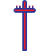

<%@ page contentType="text/html;charset=UTF-8" language="java" %>
<!DOCTYPE html>
<html>
<head>
    <title>Peta Jaringan Listrik</title>
    <meta charset="utf-8">
    <meta name="viewport" content="width=device-width, initial-scale=1.0">
    <link rel="stylesheet" href="https://unpkg.com/leaflet/dist/leaflet.css" />
    <style>
        body { font-family: Arial, sans-serif; margin: 10px; background: #f7f7f7; }
        #map { height: 600px; border-radius: 10px; margin-bottom: 20px; }
        h2 { color: #007bff; }
        .legend {
            background: white;
            padding: 10px 12px;
            font-size: 12px;
            line-height: 18px;
            color: #333;
            box-shadow: 0 0 6px rgba(0,0,0,0.3);
            border-radius: 8px;
        }
        .legend img { vertical-align: middle; width: 18px; height: 18px; margin-right: 6px; }
        .legend-line {
            display: inline-block;
            width: 30px; height: 4px;
            margin-right: 6px; vertical-align: middle;
        }
        .label-tiang {
            background-color: rgba(255,255,255,0.9);
            border: 1px solid #007bff;
            padding: 2px 4px;
            border-radius: 4px;
            font-weight: bold;
            color: #007bff;
            font-size: 12px;
        }
    </style>
</head>
<body>
<h2>📡 Peta Jaringan Listrik</h2>
<button id="btnTambahTiang">➕ Tambah Tiang Baru</button>
<div id="map"></div>

<script src="https://unpkg.com/leaflet/dist/leaflet.js"></script>
<script>
document.addEventListener('DOMContentLoaded', function() {

    // === Base layer ===
    var defaultMap = L.tileLayer('https://{s}.tile.openstreetmap.org/{z}/{x}/{y}.png', { maxZoom: 19, attribution: '&copy; OpenStreetMap' });
    var satelliteMap = L.tileLayer('https://{s}.google.com/vt/lyrs=s&x={x}&y={y}&z={z}', { maxZoom: 20, subdomains: ['mt0','mt1','mt2','mt3'], attribution: '&copy; Google Satellite' });

    // === Map Initialization ===
    var map = L.map('map', { center: [-6.2, 106.816], zoom: 13, layers: [defaultMap] });

    // === Layer Groups ===
    var garduLayer = L.layerGroup().addTo(map);
    var tiangLayer = L.layerGroup().addTo(map);
    var pelangganLayer = L.layerGroup().addTo(map);
    var kabelLayer = L.layerGroup().addTo(map);

    // === Icons ===
    var icons = {
        gardu_baru: L.icon({ iconUrl: 'assets/icons/TrafoListrik_new64.png', iconSize: [28,28], iconAnchor: [14,28] }),
        gardu_lama: L.icon({ iconUrl: 'assets/icons/TrafoListrik_old64.png', iconSize: [28,28], iconAnchor: [14,28] }),
        tiang_baru: L.icon({ iconUrl: 'assets/icons/TiangListrik_new64.png', iconSize: [28,28], iconAnchor: [14,28] }),
        tiang_lama: L.icon({ iconUrl: 'assets/icons/TiangListrik_old64.png', iconSize: [28,28], iconAnchor: [14,28] }),
        pelanggan_baru: L.icon({ iconUrl: 'assets/icons/PelangganListrik_new64.png', iconSize: [28,28], iconAnchor: [14,28] }),
        pelanggan_lama: L.icon({ iconUrl: 'assets/icons/PelangganListrik_old64.png', iconSize: [28,28], iconAnchor: [14,28] })
    };

    // === Fungsi offset kabel agar TM/TR tidak menumpuk ===
    function offsetLine(lat1, lon1, lat2, lon2, offset){
        var dx = lon2 - lon1;
        var dy = lat2 - lat1;
        var length = Math.sqrt(dx*dx + dy*dy);
        if(length === 0) return [[lat1, lon1],[lat2, lon2]];
        var ox = -dy/length * offset;
        var oy = dx/length * offset;
        return [[lat1+oy, lon1+ox],[lat2+oy, lon2+ox]];
    }

    // === Fetch Data ===
    fetch('api/jaringan')
        .then(res => res.json())
        .then(function(data){
            console.log("✅ Data jaringan:", data);
            var bounds = [];

            // --- Tambah marker per kategori ---
            data.forEach(function(row){
                var lat = parseFloat(row.latitude);
                var lon = parseFloat(row.longitude);
                if (!lat || !lon) return;

                var kategori = (row.kategori || '').toUpperCase();
                var status = (row.status_lapangan || 'LAMA').toUpperCase();
                var iconKey = '';

                if (kategori === 'GARDU') iconKey = status === 'BARU' ? 'gardu_baru' : 'gardu_lama';
                else if (kategori === 'TIANG') iconKey = status === 'BARU' ? 'tiang_baru' : 'tiang_lama';
                else if (kategori === 'PELANGGAN') iconKey = status === 'BARU' ? 'pelanggan_baru' : 'pelanggan_lama';

                var icon = icons[iconKey];

                var popup = "<b>ID:</b> " + (row.id_jaringan || '-') +
                            "<br><b>Kode:</b> " + (row.kode_system || '-') +
                            "<br><b>Kategori:</b> " + (row.kategori || '-') +
                            "<br><b>Spesifikasi:</b> " + (row.spesifikasi || '-') +
                            "<br><b>Transmisi:</b> " + (row.transmisi || '-') +
                            "<br><b>Status Lapangan:</b> " + (row.status_lapangan || '-') +
                            "<br><b>Latitude:</b> " + (row.latitude || '-') +
                            "<br><b>Longitude:</b> " + (row.longitude || '-');

                var marker = L.marker([lat, lon], {icon: icon}).bindPopup(popup);
                bounds.push([lat, lon]);

                if (kategori === 'GARDU') garduLayer.addLayer(marker);
                else if (kategori === 'TIANG') {
                    tiangLayer.addLayer(marker);
                    // --- Label untuk tiang ---
                    var labelText = (row.kode_system || '-') + " - " + (row.transmisi || '-');
                    marker.bindTooltip(labelText, {
                        permanent: true,
                        direction: 'top',
                        offset: [0, -30],
                        className: 'label-tiang'
                    });
                }
                else if (kategori === 'PELANGGAN') pelangganLayer.addLayer(marker);
            });

            // --- Gambar kabel antar node ---
            data.forEach(function(row){
                if (row.kategori === 'KABEL' && row.parent_id && row.target_id){
                    var parent = data.find(d => d.id_jaringan === row.parent_id);
                    var target = data.find(d => d.id_jaringan === row.target_id);
                    if (parent && target){
                        var tegangan = (row.transmisi || '').toUpperCase();
                        var status = (row.status_lapangan || '').toUpperCase();
                        var color = '#00bfff';
                        var offset = 0;
                        var dashStyle = null;

                        if (status === 'LAMA') {
                            color = '#808080';
                            dashStyle = '5, 8';
                        } else if (tegangan === 'TT') {
                            color = '#ff6600';
                        } else if (tegangan === 'TM') {
                            color = '#00bfff';
                        } else if (tegangan === 'TR') {
                            color = '#32cd32';
                        }

                        if (tegangan === 'TM') offset = 0.00005;
                        else if (tegangan === 'TR') offset = -0.00005;

                        var lineCoords = offsetLine(parent.latitude, parent.longitude, target.latitude, target.longitude, offset);

                        var line = L.polyline(lineCoords, { 
                            color: color, 
                            weight: 3, 
                            dashArray: dashStyle 
                        })
                        .bindPopup(
                            "<b>Kabel:</b> " + (row.kode_system || '-') +
                            "<br><b>Dari:</b> " + (parent.kode_system || '-') +
                            "<br><b>Ke:</b> " + (target.kode_system || '-') +
                            "<br><b>Tegangan:</b> " + (row.transmisi || '-') +
                            "<br><b>Spesifikasi:</b> " + (row.spesifikasi || '-') +
                            "<br><b>Status Lapangan:</b> " + (row.status_lapangan || '-')
                        );

                        kabelLayer.addLayer(line);
                    }
                }
            });

            if(bounds.length>0) map.fitBounds(bounds, {padding:[40,40]});
        })
        .catch(err => console.error("❌ Gagal memuat data jaringan:", err));

    // === Layer Control ===
    var baseMaps = { "Default": defaultMap, "Satelit": satelliteMap };
    var overlayMaps = { 
        "Gardu": garduLayer,
        "Tiang": tiangLayer,
        "Pelanggan": pelangganLayer,
        "Kabel": kabelLayer
    };
    L.control.layers(baseMaps, overlayMaps, {collapsed: false}).addTo(map);

    // === Legend ===
    var legend = L.control({ position: 'bottomleft' });
    legend.onAdd = function(){
        var div = L.DomUtil.create('div', 'legend');
        div.innerHTML = "<b>Keterangan:</b><br>" +
                        " Gardu Baru<br>" +
                        " Tiang Baru<br>" +
                        " Pelanggan Baru<br>" +
                        "<hr>" +
                        "<div><span class='legend-line' style='background:#ff6600'></span> TT (Tegangan Tinggi)</div>" +
                        "<div><span class='legend-line' style='background:#00bfff'></span> TM (Tegangan Menengah)</div>" +
                        "<div><span class='legend-line' style='background:#32cd32'></span> TR (Tegangan Rendah)</div>" +
                        "<div><span class='legend-line' style='background:#808080; border:1px dashed #808080'></span> Kabel Lama</div>";
        return div;
    };
    legend.addTo(map);


    // === Tombol tambah tiang ===
    document.getElementById('btnTambahTiang').addEventListener('click', function(){
        tambahTiangMode = true;
        alert("📍 Klik di peta untuk menambahkan titik tiang baru");
    });

    // === Klik di peta untuk tambahkan tiang ===
    map.on('click', function(e){
        if(!tambahTiangMode) return;

        var lat = e.latlng.lat.toFixed(6);
        var lon = e.latlng.lng.toFixed(6);

        if(newMarker) map.removeLayer(newMarker);

        newMarker = L.marker([lat, lon], {icon: icons.tiang_baru}).addTo(map);
        newMarker.bindPopup(`
            <div class="popup-content">
                <b>Tambah Tiang Baru</b><br>
                Koordinat:<br>
                Lat: ${lat}<br>
                Lon: ${lon}<br><br>
                <button id="btnSimpanTiang">💾 Simpan ke Database</button>
            </div>
        `).openPopup();

        tambahTiangMode = false;
    });

    // === Event delegasi tombol Simpan di popup ===
    map.on('popupopen', function(e){
        var popupNode = e.popup.getElement();
        if(!popupNode) return;

        var simpanBtn = popupNode.querySelector('#btnSimpanTiang');
        if(simpanBtn){
            simpanBtn.addEventListener('click', function(){
                var lat = e.popup._source.getLatLng().lat;
                var lon = e.popup._source.getLatLng().lng;

                var formData = new URLSearchParams();
                formData.append("latitude", lat);
                formData.append("longitude", lon);
                formData.append("kategori", "TIANG");
                formData.append("spesifikasi", "Tiang Baja 9 m");
                formData.append("kode_system", "AUTO_TG_" + Date.now());

                fetch('api/maps/addTiang', {
                    method: 'POST',
                    headers: { 'Content-Type': 'application/x-www-form-urlencoded' },
                    body: formData.toString()
                })
                .then(r => r.json())
                .then(res => {
                    if(res.success){
                        alert("✅ Tiang berhasil disimpan!");
                        e.popup._source.closePopup();
                        newMarker.bindPopup("<b>Tiang Baru</b><br>Lat: "+lat+"<br>Lon: "+lon);
                    } else {
                        alert("❌ Gagal menyimpan tiang!");
                    }
                })
                .catch(err => {
                    console.error(err);
                    alert("❌ Terjadi kesalahan saat menyimpan!");
                });
            });
        }
    });

});
</script>
</body>
</html>
